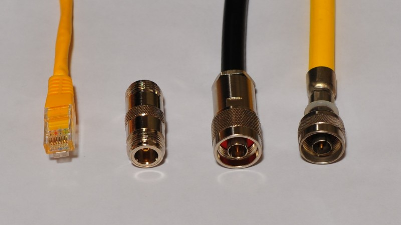
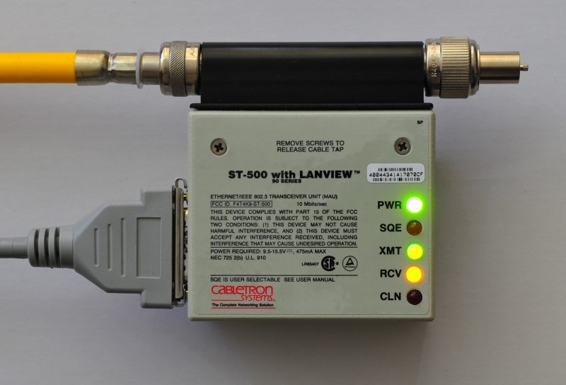
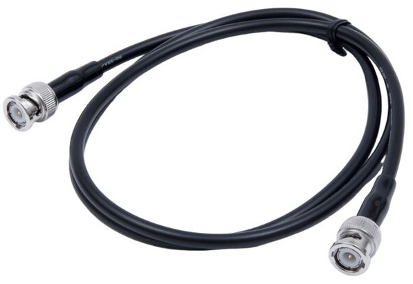
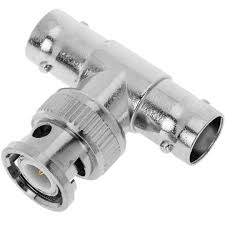
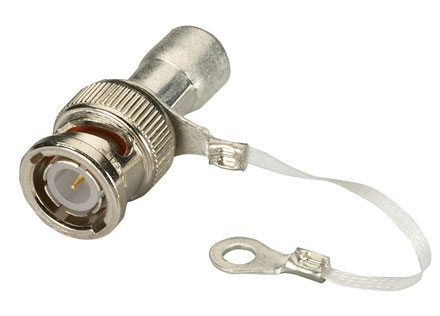
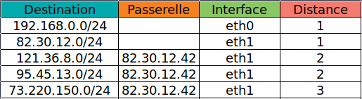

Aperçu
Historiquement, les premiers réseaux (début des années 80) étaient des réseaux locaux.
1. Réseau local
Un réseau local (LAN, pour Local Area Network) est un réseau dont l’étendue géographique est restreinte (typiquement un bâtiment).
Chaque équipement d’un LAN peut communiquer directement (sans intermédiaire) avec les autres équipements connectés.
Chaque point d’accès au réseau possède une adresse MAC (Media Access Control) qui l’identifie.
Cette adresse est gravée physiquement dans l’équipement.
Elle est de la forme c0:25:a5:71:25:6b (6 nombres à 2 chiffres hexadécimaux).
Par exemple, un ordinateur avec une carte Ethernet et une carte WiFi aura une adresse MAC pour chacun de ses 2 points de d’accès.
Sur une machine Unix, on peut consulter l’adresse MAC des interfaces réseau avec la commande ip address
ou avec la commande historique ifconfig.
|
Il existe plusieurs types de réseaux locaux : Ethernet (Xerox), Token Ring (IBM), FDDI, Wi-Fi, etc. Chacun d’eux possède une topologie donnée (bus, anneau, étoile, arborescence), des équipements spécifiques (carte réseau, hub, cable, prise) et des protocoles qui lui sont propres. Ces réseaux ne sont donc pas interopérables entre eux.
1.1. Ethernet
C’est le réseau local filaire le plus répandu. Sa topologie initiale en bus (10base-5, puis 10base-2) a évolué en étoile (10base-T).
1.1.1. Evolution en image

|

|

|

|

|

|

|
1.1.2. Caractéristiques
Toutes les stations d’un réseau Ethernet se voient : physiquement, lorsqu’une station envoie un message sur le réseau, toutes les stations de ce réseau le reçoivent.
Le protocole d’émission est le suivant : la station qui veut émettre un message attend que la ligne soit libre (que le câble soit vide de message), puis envoie son message. Si plusieurs stations font cela en même temps, des collisions se produisent. Dans ce cas, les émetteurs les détectent, stoppent leur diffusion, attendent un temps aléatoire, puis diffusent à nouveau.
L’information échangée est découpée en tronçons, chacun enpaqueté dans une trame contenant des méta-données nécessaires à l’acheminement : l’adresse MAC de l’émetteur (nécessaire pour répondre) et du destinataire, des codes de correction d’erreur, etc.
Toutes les stations reçoivent tous les messages : c’est à chacune d’elles de savoir si le message lui est ou non destiné (bonjour la confidentialité 🤫 ). Celles qui ne sont pas destinataires de la trame sont censées ne pas lire les données qu’elle véhicule.
| Quand une interface réseau voit passer un paquet, elle vérifie si celui-ci lui est destiné. Si ce n’est pas le cas, elle se doit de l’ignorer. C’est le fonctionnement pas défaut, mais qui peut être modifié. Il existe en effet un mode promiscuous, dans lequel l’interface récupère toutes les trames qu’elle voit passer, qu’elle en soit destinataire ou pas. |
# visualise l'information qui circule sur un LAN
$ sudo tcpdump
Pour écouter le trafic réseau, tcpdump passe l’interface éthernet en mode promiscuous.
Mais cela demande des privilèges particuliers.
D’où l’emploi de sudo.
|
Une adresse MAC destinataire égale à ff:ff:ff:ff:ff:ff signifie que la trame est destinée à toutes les stations : c’est un broadcast.
2. Réseau étendu
Un réseau étendu (WAN) interconnecte des réseaux locaux, sur potentiellement de longues distances.
Les stations d’un WAN qui ne sont pas situées dans le même LAN communiquent entre elles via des passerelles (appelées aussi routeurs ou gateways), qui jouent le rôle (entre autre) de relai de trame.
INTERNET (INTERconnected NETworks) est le WAN planétaire :
2.1. IP (Internet Protocol)
L’interconnexion massive des réseaux locaux fait émerger le besoin de représenter de façon intelligible le fonctionnement de cette aggrégation, en faisant abstraction des particularités des différents LAN sous-jacents. C’est l’objectif de la couche IP, qui donne une vision homogène des équipements et des communications, quelles que soient leurs spécificités physiques locales.
3. Le modèle en couche
Pour comprendre le fonctionnement d’un WAN, on le représente comme un empilement de couches, dans lequel chacune gère ses propres abstractions et les services qu’elle propose.

La position d’une couche traduit le niveau d’abstration des concepts quelle gère. Par exemple, la couche la plus basse correspond au matériel (le câble, les cartes électroniques, la connectique, les hubs, switches, etc.), et la couche la plus haute correspond aux applications (web, messagerie, partage de fichiers, streaming, etc.).
Conceptuellement, une couche d’un équipement dialogue avec la couche de même niveau de son correspondant, comme si les 2 couches s’échangeaient directement de l’information. Mais, en réalité, l’émetteur n’envoie rien à son correspondant à ce niveau. En réalité, il envoie l’information à sa couche inférieure. Symétriquement, la couche n du récepteur prend l’information de sa propre couche n-1.

|
On retrouve ce fonctionnement dans la vie de tous les jours. Soit par exemple une discussion entre 2 personnes.
|
3.1. La couche réseau
La couche réseau est le niveau physique (câble, connectique, cartes électroniques, etc.).
3.2. La couche IP (Internet Protocol)
Pour homogénéiser la vision de tous ces équipements disparates, cette couche définit son propre adressage, qui se superpose donc à l’adressage physique existant : chaque équipement dispose donc d’une adresse IP (qui l’identifie sur Internet), en plus de l’adresse MAC (qui l’identifie sur le LAN).
# consulte l'adresse IP (commande historique)
$ ifconfig
# consulte l'adresse IP (commande moderne)
$ ip address
# consulte l'adresse IP (commande moderne)
$ hostname -I
# teste la connectivité d'un équipement
$ ping 8.8.8.8Pour communiquer avec un appareillage situé sur un autre LAN, l’équipement doit connaitre quel équipement de son LAN va pouvoir faire sortir l’information (la porte de sortie). C’est la passerelle (gateway).
La commande route permet de voir la table de routage locale.
Par exemple, exécutée à partir d’une machine d’IP 192.168.59.33,
on peut obtenir quelque chose comme :
# affiche la table de routage
$ route -n
Table de routage IP du noyau
Destination Passerelle Genmask Indic Metric Ref Use Iface
0.0.0.0 192.168.50.1 0.0.0.0 UG 600 0 0 wlp0s20f3 (1)
192.168.50.0 0.0.0.0 255.255.255.0 U 600 0 0 wlp0s20f3 (2)| 1 | cette ligne indique que pour toutes les destinations (0.0.0.0), sauf exceptions,
il faut passer par la passerelle 192.168.50.1, qui est accessible via l’interface wlp0s20f3 |
| 2 | cette ligne indique que pour toute destination située sur le LAN (192.168.50.0),
il n’y a pas de passerelle,
et il faut faire sortir via l’interface wlp0s20f3 |
Ainsi, de proche en proche, les paquets passent de LAN en LAN en transitant via les passerelles successives.

3.2.1. Adresse IP
Une adresse IP comporte en réalité 2 informations juxtaposées : l’adresse du réseau et l’adresse de l’équipement sur le réseau. La frontière entre ces 2 adresses est spécifiée par le CIDR (classless interdomain routing), une information complémentaire.

Par exemple 172.16.254.1/16 signifie que l’adresse réseau est représentée par les 16 premiers bits de l’adresse IP
(soit 172.16.x.x),
et que par conséquent l’adresse locale est représentée par les 16 derniers (soit 254.1).
De même, 192.168.1.1/24 signifie la frontière se situe au 24ème bit.
Le réseau est donc le 192.168.1, et l’équipement 1.
3.2.2. Passerelle
Une passerelle (ou routeur, gateway) est un équipement connecté à plusieurs réseaux (au moins 2), et qui gère le passage des paquets d’un réseau à l’autre (à l’aide d’une table de routage).
Une table de routage est une liste de correspondance (réseau ←→ passerelle pour l’atteindre).

3.2.3. Routage
- Cas d’un LAN avec 1 seule passerelle
-
C’est le cas le plus courant. Si le LAN n’a qu’une interconnexion vers l’extérieur, alors chaque station doit connaitre l’adresse IP de cette passerelle, appelée alors passerelle par défaut (default gateway).
Analogie : 2 personnes situées dans 2 bâtiments différents, et souhaitant discuter de vive voix, doivent savoir où se trouve le téléphone. L’algorithme est le suivant : pour envoyer un paquet d’information à une machine, si cette machine est sur le même LAN, le paquet lui est directement transmis, sinon il est envoyé à la passerelle par défaut.
- Cas d’un LAN avec plusieurs passerelles
-
Si le LAN est interconnecté à plusieurs réseaux, alors les stations doivent savoir à quelle passerelle envoyer le paquet pour atteindre le réseau du destinataire.
Pour cela, chaque station possède une table de routage. Chaque élément de cette table associe un réseau à une adresse IP, celle de la passerelle par laquelle il faut passer. L’algorithme est le suivant : pour envoyer un paquet d’informaition à une machine située sur un réseau donné, ce réseau est recherché dans la table de routage. S’il est trouvé, alors le paquet est envoyé à la passerelle associée. Sinon il est envoyé à la passerelle par défaut.
Un équipement doit donc savoir déterminer si son destinataire est ou non sur le même LAN que lui.
- Lister les passerelles traversées
# passerelles traversées lors du cheminement des paquets
$ traceroute 8.8.8.8La commande ci-dessus montre les routeurs traversés par un paquet partant de l’équipement local
et transitant vers la destination correspondant à l’adresse IP 8.8.8.8.
3.2.4. En résumé
La couche IP permet l’échange de paquets d’information entre 2 équipements connectés au même réseau IP.
A ce niveau, on peut détecter (avec la commande ping) si un équipement est ou non joignable depuis l’équipement local.
Rien ne permet donc de savoir si un équipement peut par exemple répondre à une requête web,
ou bien s’il peut recevoir un mail.
Car la couche IP ne s’intéresse pas à la nature des échanges.
3.3. La couche transport
C’est ici que l’on considère qu’il existe divers types de dialogues, et que 2 équipements doivent pouvoir tenir en parallèle plusieurs types de conversation (comme par exemple échanger des mails et en même temps s’échanger des pages web).
|
Analogie
L’envoi d’un SMS à la personne avec qui on discute passe par 2 canaux multiplexés :
la voix et le réseau téléphonique.
|
C’est aussi à ce niveau qu’apparait la notion de client et de serveur. Un serveur est un équipement à l’écoute de requêtes (émises par des clients). Un client est un équipement qui émet des requêtes (à un serveur).
C’est aussi au niveau de la couche transport que se pose la question de la fiabilité et de la rapidité des échanges. Veut-on que l’information reçue soit rigoureusement l’information émise (au prix d’un travail complexe et coûteux de vérification) ou au contraire veut-on une information la meilleure possible (best effort) pour aller plus vite ? Les 2 possibilités existent, et à chacune d’elles correspond un protocole : UDP ou TCP.
|
Fiabilité ou rapidité : exemple de dilemne.
En environnement perturbé, pour que la musique reste agréable à écouter,
vaut-il mieux privilégier la bande passante (une haute définition, 20-20000Hz, donc un volume de donnée important)
quitte à augmenter la latence (qui provoque de la gigue, ou jitter),
ou bien vaut-il mieux privilégier la régularité du tempo, quitte à perdre en qualité ?
|
3.3.1. UDP (User Datagram Protocol)
C’est un protocole léger et rapide, mais qui ne garantit pas une remise fiable des informations au destinataire : l’information peut se perdre ou se mélanger (les paquets peuvent arriver dans le désordre). UDP est utilisé par des applications qui échangent des messages courts, et pour qui la perte n’est pas grave.
Par exemple, le protocole NTP de synchronisation des horloges s’appuie sur UDP : l’information (les tops d’horloges) est petite et diffusée régulièrement, un paquet perdu n’est donc pas un problème. De même, certains protocoles de streaming s’appuient sur UDP, considèrant qu’il n’est pas grave de perdre quelques paquets, mieux valant assurer la fluidité.
UDP transmet les messages sans établir de connexion entre les 2 équipements communiquants.
# visualiser les flux UDP
$ sudo tcpdump udp3.3.2. TCP (Transmission Control Protocol)
TCP est un protocole de transport garantissant la remise des données sans altération. Les paquets sont numérotés par l’émetteur, et réassemblés dans l’ordre d’émission par le destinataire. La réémission des paquets perdus est automatique. Le récepteur est sûr d’obtenir tous les paquets émis, et dans le bon ordre.
Les échanges se font en mode connecté. Une session TCP comporte 3 étapes : l’établissement de la connexion, le transfert des données, et la fermeture de la connexion.
Actuellement, 90% du trafic Internet sont des flux TCP : le web (HTTP), la messagerie (SMTP, IMAP), le streaming de Youtube et Netflix s’appuient sur TCP.
# visualiser les flux TCP
$ sudo tcpdump tcp3.3.3. Le port
Le port identifie la nature des communications.
C’est un entier positif.
Par exemple, on récupére une page web en envoyant une requête sur le port 80 d’un serveur.
Par conséquent, un serveur à l’affut de requêtes sur son port 80 (http) est un serveur web.
De même, on envoie un mail sur le port 25 (smtp) d’un serveur de messagerie,
et on relève une boîte aux lettres en envoyant une requête sur le port 443 (imap) du même serveur de messagerie (multiplexage).
Tout comme une adresse IP identifie de façon unique un équipement sur Internet,
le triplet (adresse_IP ; protocole_de_transport ; port) identifie de manière unique un service sur Internet.
Par exemple, (8.8.8.8 ; UDP ; 53) identifie de façon unique un serveur DNS sur Internet
(8.8.8.8 est l’un des serveurs DNS publics bien connus de Google).
Un tel triplet s’appelle un socket réseau.
# visualiser les échanges sur le web
$ sudo tcpdump tcp and port 80
L’application EtherApe cartographie les communications des équipements du LAN
en temps réel (sudo etherape).
Utile pour avoir une idée du trafic local,
et détecter des communications suspectes
(en fermant les yeux sur la caractère indiscret de la manip 🫣).
|
3.3.4. QUIC
Contrairement aux 2 protocoles historiques UDP et TCP, QUIC (Quick UDP Internet Connections) est un chalenger apparu en 2012. Développé initialement par Google, il est aujourd’hui standardisé par l’IETF. Son but est d’améliorer (voire remplacer) TCP pour le web moderne, en étant plus rapide, plus sûr et mieux adapté aux réseaux mobiles.
Quic s’appuie sur UDP, mais offre une fiabilité digne de TCP, ainsi qu’un chiffrement intégré. Facebook, Netflix, YouTube l’utilisent aujourd’hui. HTTP/3 s’appuie sur Quick.
3.4. La couche application
Cette couche définit les services Internet : le web, la messagerie, le shell (SSH), les partages réseau (NFS, CIFS), la synchronisation des horloges (NTP), le streaming, etc. C’est à ce niveau que sont définis les protocoles de ces services, qui s’appuient soit sur TCP, soit sur UDP (ou QUIC):
protocole |
protocole sode transport |
port |
usage |
http |
tcp |
80 |
transfert de données sur le web |
https |
tcp |
443 |
transfert securisé de données sur le web |
ftp |
tcp |
20 & 21 |
transfert de fichiers |
smtp |
tcp |
25 |
envoi de mails |
pop3 |
tcp |
110 |
relève de boîtes aux lettres |
imap |
tcp |
143 |
relève de boîtes aux lettres |
imaps |
tcp |
993 |
relève sécurisé de boîtes aux lettres |
ssh |
tcp |
22 |
session shell |
ntp |
udp |
123 |
synchronisation d’horloges |
domain (dns) |
udp ou tcp |
53 |
correspondance adresse IP ←→ nom d’équipement |
ipp |
udp ou tcp |
631 |
impression réseau |
Sous Unix, les services sont définis dans le fichier /etc/services.